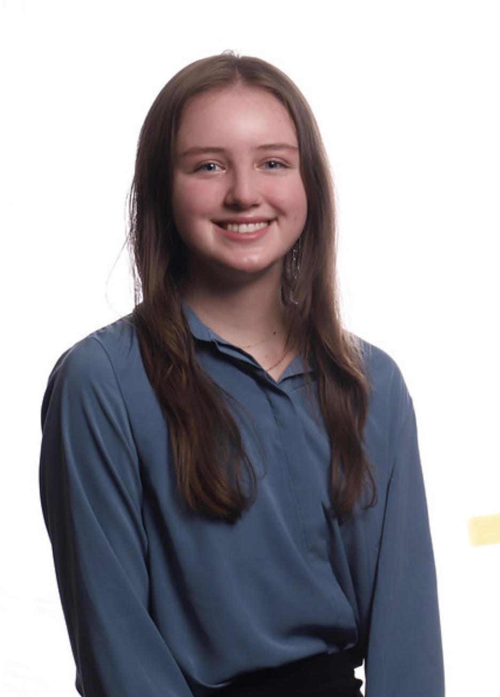
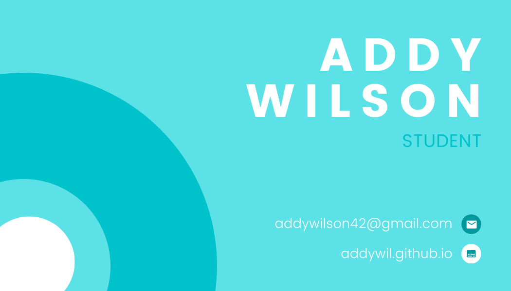

I am currently a senior at Centennial High School and have enjoyed my last two years by becoming more involved within the coding community. I was first introduced to the world of computer science during middle school when I took an engineering course. Although, I have always been interested in technology whether it be in playing video games or on the functionality of certain applications. Nowadays I am experienced in coding languages such as Python, Javascript, HTML, and CSS.
There are many stigmas within computer science, such as computer scientists often working alone and adopting antisocial habits. As I spent time in Student Leadership John's Creek and coding classes, I realized how important being a leader as well as being a part of a team in computer science is. My leadership philosophy focuses on encouraging and cultivating the ideas of others. The things I value most are kindness and respect while working in a team.
Other than my interest in coding, I love taking care of plants and finding new music to listen to. I visit plant nurseries way too frequently and am waiting for my next opportunity to go to a concert!
Courses I've Taken
Intro to Digital Tech
AP World History
AP Biology
AP Calculus AB
AP Psychology
Courses I'm Currently Taking
AP Computer Science Principles
AP Literature Composition
AP Statistics
Gifted Directed Study
Positions I Currently Hold
Director of Mentorship of Centennial High School Model UN (2021-2022)
President of Centennial High School Beta Club (2021-2022)
Member of Centennial High School Sustainable Development Goals Club (2021-2022)
Member of Student Leadership John's Creek (2018-2022)
Positions I've Previously Held
Member of Centennial High School Model UN (2019-2021)
Member of Centennial High School Beta Club (2018-2019)
10th Grade Representative of Centennial High School Beta Club (2019-2020)
Communications Officer of Centennial High School Beta Club (2020-2021)
Events Coordinator of Centennial High School Sustainable Development Goals Club (2020-2021)
Co-Founder and Member of Unity in Community (2020-2021)
Member of Centennial High School Cross Country Team (2019-2021)
Achievements
Principal's Honor Roll (2018-2021)
Centennial High School Science Fair First in Category (2019)
AP Scholar (2020)
Varsity Scholar Athlete Award in Cross Country (2020-2021)
Model UN
As Director of Mentorship of Model UN I have hosted many meetings throughout the year in order to help new members of the club. I also took part in directing Centennial High School's open conference that had around 40 participants. Before the conference, I hosted meetings to help prepare the participants. During the conference, I was mainly in charge of technology and the overall flow of the day.
Beta Club
As President of Beta Club I have hosted a meeting every month for the club to share events and other important information. This year I hosted a toiletry drive through North Fulton Charities and collected over 250 toiletries. In 2019, I helped the president of the club host a coat drive where over 200 coats were collected.
Sustainable Development Goals Club
When I worked as an Events Coordinator for Sustainable Development Goals Club I was in a team of three where we would collaborate with one another regularly. We shared many events within the club, but often faced difficulties because of the pandemic. My favorite thing I did in the club was host online meetings about sustainable development goals. I also made any meeting I was not hosting to participate in any discussions.
Unity in Community
Unity in Community was an organization I co-founded for a project a part of Student Leadership John's Creek. It was a massive learning experience for me and my team as we had to start a volunteer organization during the pandemic. I was in charge of communicating with a senior center in order to host events. At times, I was emailing them daily in order to work through certain technological difficulties and other problems. We were able to host a gift drive for the seniors as well as host zoom calls to interact with them.
Cross Country
I have sacrificed a lot of time to be a part of Cross Country, but I have enjoyed a lot of it. I would have practice everyday as well as a meet almost every weekend. During my time, I was able to gain a Varsity Letter as well as Scholar Athlete Awards. I ran over 100 miles during the summer and joined the 100 mile club in my team which was a big goal I had set for myself as well.
Business Card

I am relatively new in the field of computer science which often leads me to feel inexperienced compared to my peers. My personal vision is to gain more experience within the field of computer science. I am already participating in computer classes, but I think my best plan of action is to start my own personal projects. I already have a baseline for many coding languages, however, working on personal projects will allow me to expand my current knowledge. For example, I have started coding websites. In the future I also wish to work on creating my own app.
As for being a leader in the field of computer science, my mission is to learn and collaborate with others. I can incorporate this in my own personal projects, such as collaborating with another coder in the development of an app. Even if I don't, I will always plan to be open for critique and ideas from anyone.
1. Developer
People exceptionally talented in the Developer theme recognize and cultivate the potential in others. They spot the signs of each small improvement and derive satisfaction from evidence of progress.
2. Adaptability
People exceptionally talented in the Adaptability theme prefer to go with the flow. They tend to be “now” people who take things as they come and discover the future one day at a time.
3. Intellection
People exceptionally talented in the Intellection theme are characterized by their intellectual activity. They are introspective and appreciate intellectual discussions.
4. Input
People exceptionally talented in the Input theme have a need to collect and archive. They may accumulate information, ideas, artifacts or even relationships.
5. Futuristic
People exceptionally talented in the Futuristic theme are inspired by the future and what could be. They energize others with their visions of the future.
More information regarding my strengths can be found here.
Throughout this portfolio project, I have learned about the importance of having a professional identity in the digital media environment. It's first been helpful in creating my own image of myself. This project has helped me reflect on my own actions throughout my high school career. It also has led me to think about how my previous actions will lead to my future. Overall, it was really interesting to write and compile information about myself. I hope in the future that I will have even more credible experiences to add.
A professional identity in the digital media environment also helps with making connections with other people. Digital media is incredibly helpful with sharing content and ideas with other people. In the future, I will be able to use this professional identity to show organizations of my own capability. It will also be easy to change my digital media presence when it is needed.
Lastly, I think that I will be able to use this identity to learn from others on the same platforms. I can easily look at other people in the computer science field and the paths they have taken to get where they are. The world of digital media, especially in a professional environment, will always be growing and I will always be learning from it.
Website built by Addy Wilson using Sublime Text.